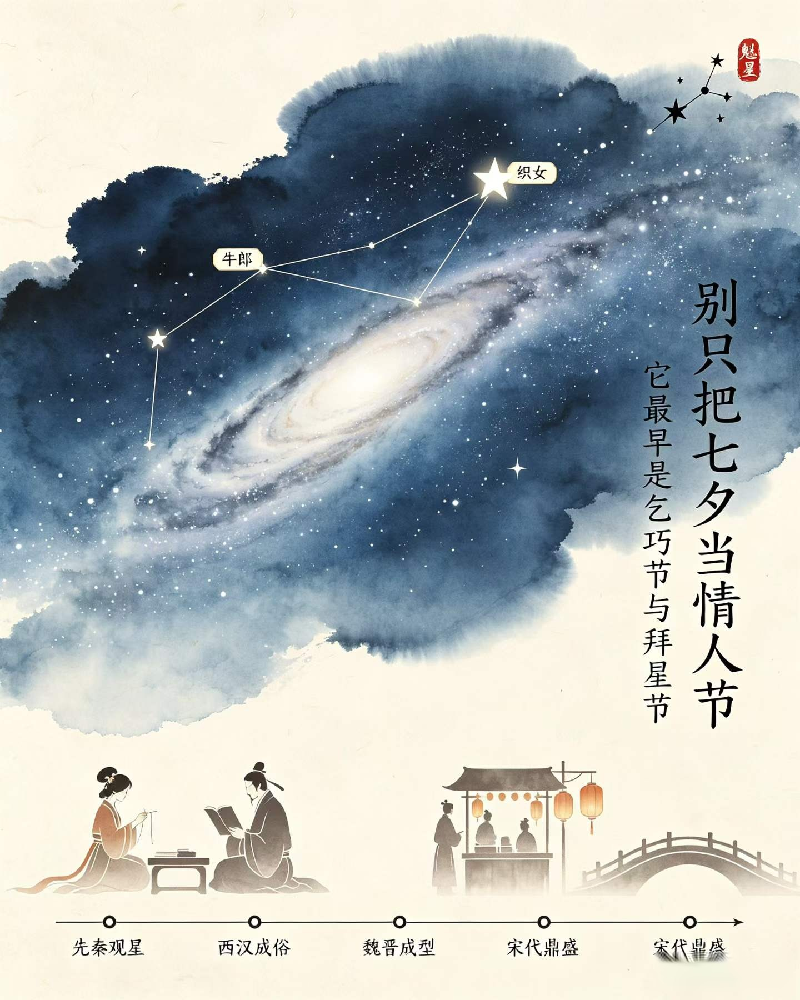
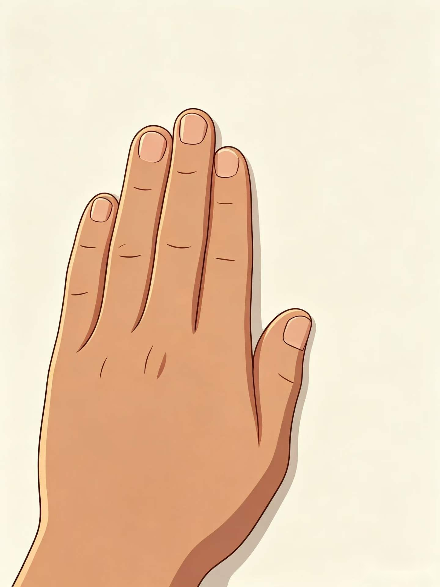
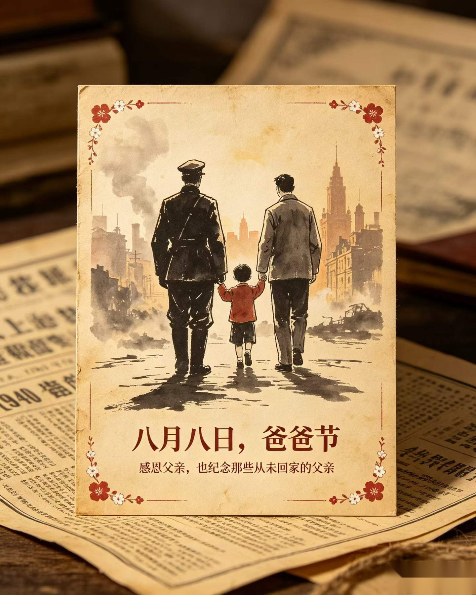
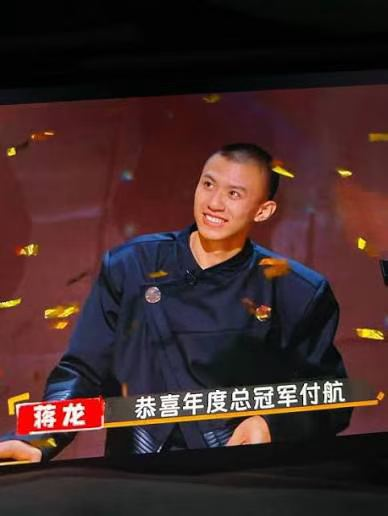
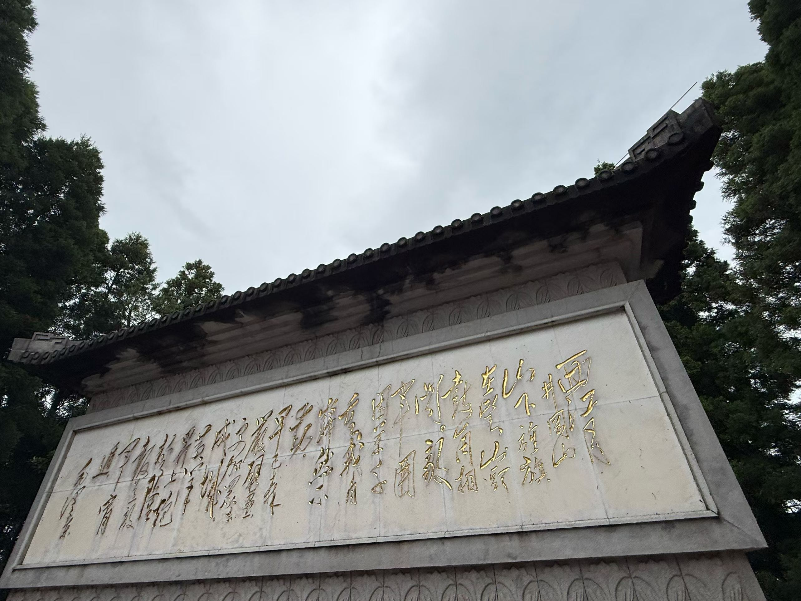
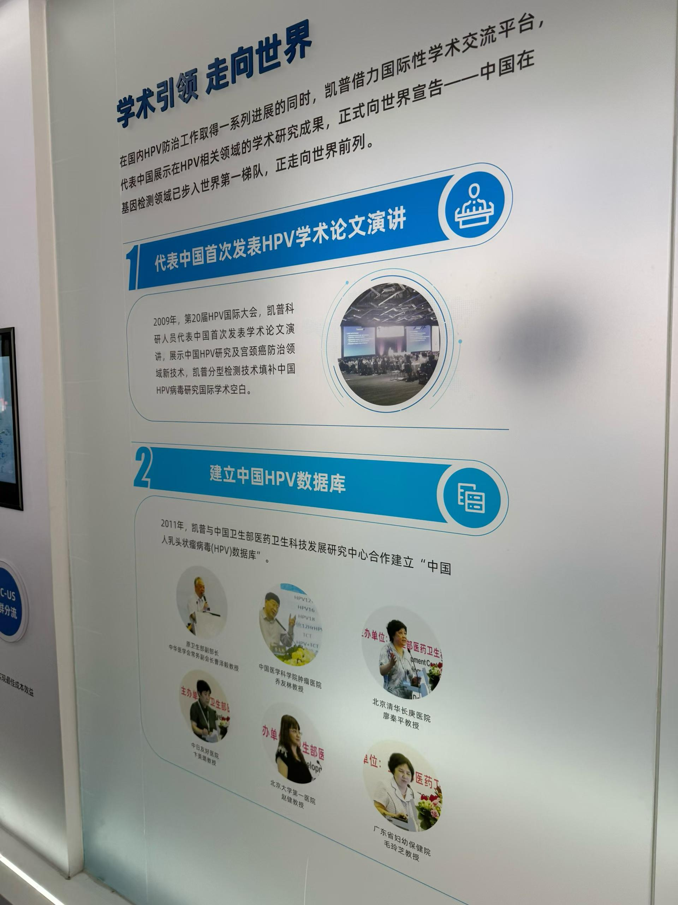
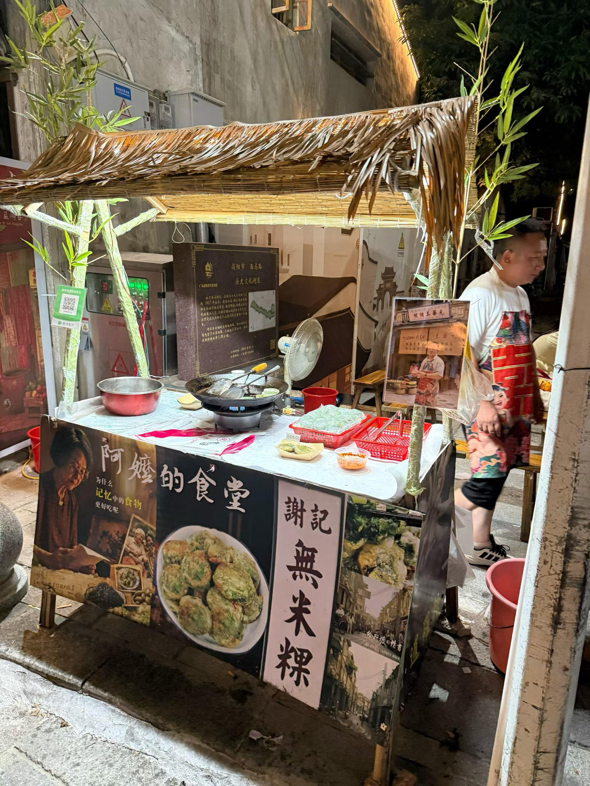
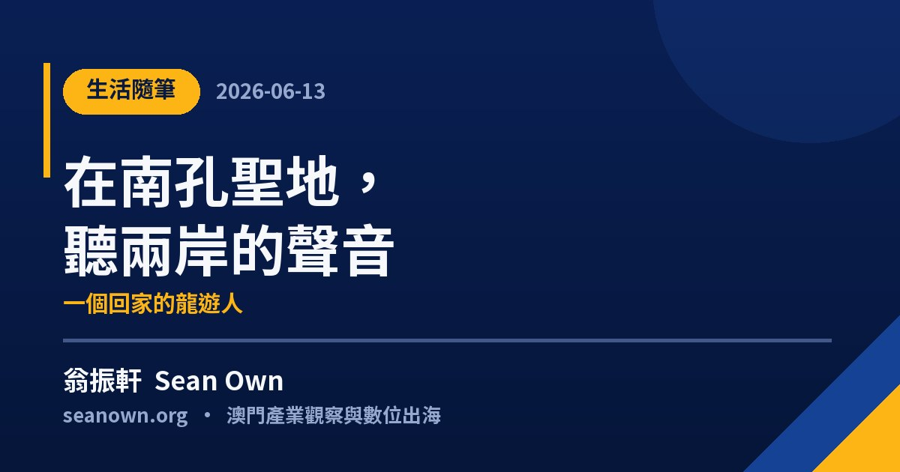

日子不只是被填滿，更該被讀出滋味。這一輯收錄隨筆、節氣、書摘與行走——從一句話的反思，到一場江西七日、一封潮汕僑批；從付航的父親智慧，到《思考，快與慢》的認知偏誤，再到辜朝明「資產負債表衰退」的宏觀啟示。
慢下來，才看得見。
 13 / 132026.10.08· 澳門
13 / 132026.10.08· 澳門禮儀不是形式，是讓每個人被舒服地對待
一、很多人以為禮儀是裝樣子在澳門做協會與產業工作這二十多年，我看過太多「以為自己很懂禮儀」的人，真正站在典禮台上才知…
› 12 / 132026.10.08· 澳門
12 / 132026.10.08· 澳門會議結束了，事情才開始
我們談效率，談的幾乎都是機器與軟件——生產線、倉儲、演算法、數據中台，卻很少有人把「開會」放進成本表裡算一算。但在一…
› 11 / 132026.09.09· 澳門
11 / 132026.09.09· 澳門近期反思：十二句話，十二幅手繪
把近期的閱讀、行走與觀察，濃縮成十二句話。每一句配一幅手繪線稿：左邊是畫，右邊是原話、背景與認知啟示。不追求體系完整…
› 10 / 132026.09.07· 澳門
10 / 132026.09.07· 澳門《思考，快與慢》精讀筆記
丹尼爾·卡尼曼（Daniel Kahneman, 1934–2024）——諾貝爾經濟學獎得主的代表作，行為經濟學奠基…
›
09 / 132026.08.19· 澳門七夕：它原本不是情人節✨
很多人把七夕當作中國情人節，其實根源是上古星宿崇拜。真實天文：銀河兩側，牛郎星與織女星，實際相距16光年，宇宙之中永…
›
08 / 132026.08.10· 澳門兩個念頭：出發與手相
兩則短念頭，一篇記下來。 無名指長過食指｜手相啟示民間手相說法：男看左手，女看右手，若是無名指長過食指，一生會遇上三…
›
07 / 132026.08.08· 澳門八八·爸爸節｜一段烽火歲月誕生的本土節日
1945抗戰末年，上海還在佔領之下，滿城飽經戰亂。梅蘭芳、顏惠慶等十位上海社…
›- 06 / 132026.08.07· 澳門
什麼！？今晚立秋！？（8月7日 19:42）
我還正準備感受盛夏，立秋就悄悄來了，暑氣依舊熾熱，秋意卻已登場。📜小故事…
› 
05 / 132026.08.05· 澳門付航：一位父親最高級的智慧
看付航拿下《喜劇之王》總冠軍，最打動我的不只是舞台上的表演，而是他父親的兩句通透智慧的話。…
›
04 / 132026.07.29· 吉安市江西七日：從井岡山到滕王閣
七月下旬，贛北到贛西南，四天一千二百公里。原本只是商務行程中間的空檔，走完才發現這幾站串成一條線。七篇併一篇，按走的…
›
03 / 132026.07.24· 澳門拜訪凱普集團，一場意料之外的重逢
巧遇舊識余小望先生，現任凱普康和醫院行政副院長。凱普生物是HPV領域中國先行者，A股…
›
02 / 132026.07.23· 汕頭市潮汕行：一封僑批的兩端
七月二十二到二十三日，揭陽、汕頭。三篇併一篇：實業、基建、鄉愁，三個角度看同一個地方。 07.22 揭陽實業傳奇：康…
›
01 / 132026.06.13· 浙江衢州龍遊在南孔聖地，聽兩岸的聲音——一個回家的龍遊人
隔了二十四年，我回到祖籍地衢州龍遊，以一位參加交流活動的台商身份，坐在百位台商中間。這篇記的不只是活動，是一個龍遊人…
›